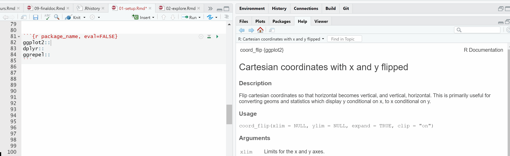

Chapter 3 Setup
3.2 Rstudio shortcuts
Another tip to speed up coding in RStudio is to use keyboard shortcuts. Here is the full list of RStudio shorcuts.
I use
Ctrl+Shift+Min Windows (Cmd+Shift+Min Mac) to insert a pipe%>%with spaces which makes tidyverse coding fast.I also use
Alt+-in Windows (Option+-in Mac) to create the assign operator<-.
3.3 Load R packages to your library
Here are all the R packages used in this book.
# data vis https://www.htmlwidgets.org/index.html
library(ggplot2) # static charts - amazing variety
library(plotly) # interactive charts
library(apexcharter) # much like the paid for highchater js library. Powerful
library(trelliscopejs) # small multiples
library(dygraphs) # awesome interactive timeseries
# ggplot extensions https://www.ggplot2-exts.org/gallery/
library(scales) # improve your scales
library(gganimate) # animate your ggplot
library(png) #
library(directlabels) # for directly labelling lines for example
library(gghighlight) # label points of interest on your charts
library(ggrepel) # move labels so they don't overlap
library(glue) # include column names in a looping chart title
library(crosstalk) # link html widgets like plotly to DT tables
library(skimr) # quickly skim the characteristics of a data frame
library(cowplot) #
# colours
library(RColorBrewer) # ready to use colour pallets
library(prismatic) # palettes and ways to tweak an entire pallete
# tables
library(kableExtra) # attractive static tables
library(formattable) # colour tables. Like Excel's conditional formattinng
library(rpivotTable) # like Excel's pivot table
library(DT) # awesome interactive tables
library(reactable)
# Quality Assurance
library(tidylog) # great for QA on the fly
library(testthat) # for writing unit tests
library(assertr) # for writing tests verify assumptions about data early in the data pipeline of manipulation
# wrangling / munging / manipulating
library(tidyverse) # loads of useful packages in one
# time series tools
library(anytime) # convert text into the right date type
library(tsbox) # convert to time series for dygraphs
# sample data
library(mosaicData) # sample data
library(eventdataR) # sample process mining data sets
# Processing mining
library(bupaR) # the process mining package that converts your data into an event log
library(edeaR) # good for filtering and subsetting a process event log
library(processmapR) # convert an event log into a visual process map
library(processanimateR) # animate a process map
library(processcheckR) # carry out conformance checking (i.e. a process follows certain rules)
library(heuristicsmineR) # Process discovery algorithm
library(fuzzymineR) # Process discovery algorithm3.4 The data to visualise
Often in EDA and data visualisation, we are most interested in how values change over time. For example, are things getting worse, better, higher, lower? For this reason, instead of using a built in data set like iris or mtcars we mostly use the Texas housing sales data in this book. This is a time-series data set built into ggplot.
To improve your skills I recommend finding other open data sets to develop your data vis skills. I found the marriage data we look at later in this comprehensive list of R datasets. The Tidy Tuesday data sets are also a great source of data sets. You also get to learn from seeing how others (including David Robinson) have tackled them.
You could also look for data stories that interest you or that you could improve and explore further. I recently saw a data visualisation in The Times newspaper on smoking and vaping that I tried to improve.
The only manipulation we will do to the Texas housing sales data below is to create a real date using lubridate. This book doesn’t cover the data manipulation part of EDA. A good guide is the Managing Data Frames with the
dplyrpackage chapter in Roger Peng’s Exploratory Data Analysis with R. As well as the resources described in bullet 1 here.
# create a data frame with a real date for plotting
df <- ggplot2::txhousing %>%
dplyr::mutate(date = lubridate::make_date(year = year,
month = month,
day =1)) - Here are the top few rows of the data frame we created using a simple kableExtra table. The Tables chapter later on in this book describes different table methods in more detail.
| city | year | month | sales | volume | median | listings | inventory | date |
|---|---|---|---|---|---|---|---|---|
| Abilene | 2000 | 1 | 72 | 5380000 | 71400 | 701 | 6.3 | 2000-01-01 |
| Abilene | 2000 | 2 | 98 | 6505000 | 58700 | 746 | 6.6 | 2000-02-01 |
| Abilene | 2000 | 3 | 130 | 9285000 | 58100 | 784 | 6.8 | 2000-03-01 |
| Abilene | 2000 | 4 | 98 | 9730000 | 68600 | 785 | 6.9 | 2000-04-01 |
| Abilene | 2000 | 5 | 141 | 10590000 | 67300 | 794 | 6.8 | 2000-05-01 |
| Abilene | 2000 | 6 | 156 | 13910000 | 66900 | 780 | 6.6 | 2000-06-01 |
3.5 QA and Unit tests
3.5.1 tidylog
- We’ll also use tidylog with dplyr. Tidylog is an easy way to include fast basic Quality Assurance during dplyr data manipulation. Just replace the dplyr verbs with the same verb in tidylog. Tidylog tells you what each dplyr verb has done to your data. For example, how many rows
dplyr::filter()drops or adds, or what percentage of valuesdplyr::mutate()has changed.
# create a data frame with a real date for plotting
df <- ggplot2::txhousing %>%
tidylog::mutate(date = lubridate::make_date(year = year,
month = month,
day =1)) ## mutate: changed 8,602 values (100%) of 'date' (0 new NA)The tidylog message above tells us that the mutate has changed
(100%) of 'date' (0 new NA). This is what we would expect to happen.Let’s also create a data frame with fewer cities so that some plots created later will be less crowded. Below we select only cities where the maximum number of sales in any month is more than 500.
# reduce the number of cities for simpler plots
df_red <- df %>%
dplyr::group_by(city) %>%
tidylog::mutate(sales_max = base::max(sales)) %>%
dplyr::ungroup() %>%
tidylog::filter(sales_max >= 500)## mutate (grouped): new variable 'sales_max' with 27 unique values and 43% NA## filter: removed 6,171 rows (72%), 2,431 rows remaining- Hold on. Look! Read the tidylog message above. It says
new variable 'sales_max' with 27 unique values and 43% NA. As we filter the rows in the next line of code bysales_maxwe don’t want any of the values to be NA. Well spotted tidylog. We correct it below by removing NAs fromsalses_maxby addingna.rm = TRUEinside thebase:max()function.
# reduce the number of cities for simpler plots
df_red <- df %>%
dplyr::group_by(city) %>%
tidylog::mutate(sales_max = base::max(sales,
na.rm = TRUE)) %>%
dplyr::ungroup() %>%
tidylog::filter(sales_max >= 500)## mutate (grouped): new variable 'sales_max' with 45 unique values and 0% NA## filter: removed 5,984 rows (70%), 2,618 rows remaining- The tidylog message above now tells us that the new variable
sales_maxhas0% NAas we would expect.
3.5.2 testthat
Unit testing is mostly used during the creation of R packages. It can also be part of your analysis code. Particularly if your work is high impact and you need to be confident the results are still valid in the future. For example, you are running new data through your code or when you have added new logic. Unit tests are an automatic way to highlight errors new data or new logic has introduced you may not have spotted.
Hadley Wickham provides some useful “what to test” rules of thumb for when to use unit tests in his R packages book:
Strive to test each behaviour in one and only one test. Then if that behaviour later changes you only need to update a single test.
Avoid testing simple code that you’re confident will work. Instead focus your time on code that you’re not sure about, is fragile, or has complicated interdependencies. That said, I often find I make the most mistakes when I falsely assume that the problem is simple and doesn’t need any tests.
Always write a test when you discover a bug. You may find it helpful to adopt the test-first philosophy. There you always start by writing the tests, and then write the code that makes them pass. This reflects an important problem solving strategy: start by establishing your success criteria, how you know if you’ve solved the problem.
In this unit test we’re immediately going to break Hadley’s second rule above and write a test on the simple code that created our dataframe
df. The unit tests are all adapted from an excellent introductory blog on unit tests. The code has been altered to follow the three Code style rules described in the next chapter to make these examples easier to read and understand.First, let’s test if the dimensions of
dfare as we expect with 9 columns and 8,602 rows.
testthat::test_that("data dimensions correct", {
testthat::expect_equal(
object = base::ncol(df),
expected = 9
)
testthat::expect_equal(
object = base::nrow(df),
expected = 8602
)
})- This
testthat::test_that()test does not return a message, so we knowdfhas passed because the dimensions are as we expect. Let’s now test data types.
testthat::test_that('data types correct', {
testthat::expect_is(object = df,
class = 'data.frame')
testthat::expect_is(object = df$date,
class = 'Date')
})- Again, this test no messages so
dfhas passed this test. Finally, let’s run a test we know will fail to see what failure message returns.
testthat::test_that("no missing values", {
testthat::expect_identical(
object = df,
expected = stats::na.omit(df)
)
})## Error: Test failed: 'no missing values'
## * <text>:3: `df` not identical to stats::na.omit(df).
## Different number of rows- The code above tests if the original
dfobject is identical to theexpectedobject after omitting rows with NA values (usingstats::na.omit()). The testthat message tells us the object and the expectation have aDifferent number of rows. We can now investigate this test failure by eye-balling some rows ofdfwhere any of the columns contain a missing value. Then decide if this is what we would expect from this data source.
| city | year | month | sales | volume | median | listings | inventory | date |
|---|---|---|---|---|---|---|---|---|
| Abilene | 2006 | 3 | 155 | 18030000 | 105400 | NA | NA | 2006-03-01 |
| Amarillo | 2005 | 10 | 67 | 7225000 | 87000 | NA | NA | 2005-10-01 |
| Amarillo | 2006 | 6 | 345 | 46755000 | 120700 | NA | NA | 2006-06-01 |
| Amarillo | 2006 | 9 | 288 | 37365000 | 114100 | NA | NA | 2006-09-01 |
| Amarillo | 2007 | 11 | 253 | 32910000 | 114800 | NA | NA | 2007-11-01 |
| Amarillo | 2010 | 5 | 333 | 45797490 | 122100 | NA | NA | 2010-05-01 |
3.5.3 assertr
You can also run tests piped directly within your data manipulation code using assertr. This assertr vignette has good examples on built-in data, as well as the assert section at the bottom of this good blog.
Below we purposely ensure the assertr tests will fail all the tests so we can read the useful error output it can create.
df %>%
assertr::chain_start() %>%
assertr::verify(base::nrow(.) == 8601) %>%
assertr::verify(base::ncol(.) ==8) %>%
assertr::assert(in_set(1:11),
month) %>%
assertr::assert(in_set(2000:2014),
year) %>%
assertr::assert(within_bounds(lower.bound = 0,
upper.bound = Inf,
include.lower= TRUE,
allow.na = TRUE), -city,-date) %>%
assertr::insist(within_n_sds(3),
sales:inventory,) %>%
assertr::assert(not_na, dplyr::everything()) %>%
assertr::chain_end(error_fun = error_stop)## verification [base::nrow(.) == 8601] failed! (1 failure)
##
## verb redux_fn predicate column index value
## 1 verify NA base::nrow(.) == 8601 NA 1 NA
##
## verification [base::ncol(.) == 8] failed! (1 failure)
##
## verb redux_fn predicate column index value
## 1 verify NA base::ncol(.) == 8 NA 1 NA
##
## Column 'month' violates assertion 'in_set(1:11)' 690 times
## verb redux_fn predicate column index value
## 1 assert NA in_set(1:11) month 12 12
## 2 assert NA in_set(1:11) month 24 12
## 3 assert NA in_set(1:11) month 36 12
## 4 assert NA in_set(1:11) month 48 12
## 5 assert NA in_set(1:11) month 60 12
## [omitted 685 rows]
##
##
## Column 'year' violates assertion 'in_set(2000:2014)' 322 times
## verb redux_fn predicate column index value
## 1 assert NA in_set(2000:2014) year 181 2015
## 2 assert NA in_set(2000:2014) year 182 2015
## 3 assert NA in_set(2000:2014) year 183 2015
## 4 assert NA in_set(2000:2014) year 184 2015
## 5 assert NA in_set(2000:2014) year 185 2015
## [omitted 317 rows]
##
##
## Column 'sales' violates assertion 'within_n_sds(3)' 288 times
## verb redux_fn predicate column index value
## 1 insist NA within_n_sds(3) sales 2060 4244
## 2 insist NA within_n_sds(3) sales 2061 3977
## 3 insist NA within_n_sds(3) sales 2062 4545
## 4 insist NA within_n_sds(3) sales 2063 4738
## 5 insist NA within_n_sds(3) sales 2064 4276
## [omitted 283 rows]
##
##
## Column 'volume' violates assertion 'within_n_sds(3)' 254 times
## verb redux_fn predicate column index value
## 1 insist NA within_n_sds(3) volume 722 944924177
## 2 insist NA within_n_sds(3) volume 723 880058970
## 3 insist NA within_n_sds(3) volume 724 993168216
## 4 insist NA within_n_sds(3) volume 725 931481472
## 5 insist NA within_n_sds(3) volume 734 1012123948
## [omitted 249 rows]
##
##
## Column 'median' violates assertion 'within_n_sds(3)' 89 times
## verb redux_fn predicate column index value
## 1 insist NA within_n_sds(3) median 734 243900
## 2 insist NA within_n_sds(3) median 735 248900
## 3 insist NA within_n_sds(3) median 736 246900
## 4 insist NA within_n_sds(3) median 737 243800
## 5 insist NA within_n_sds(3) median 740 242100
## [omitted 84 rows]
##
##
## Column 'listings' violates assertion 'within_n_sds(3)' 255 times
## verb redux_fn predicate column index value
## 1 insist NA within_n_sds(3) listings 2086 21153
## 2 insist NA within_n_sds(3) listings 2087 22043
## 3 insist NA within_n_sds(3) listings 2088 23165
## 4 insist NA within_n_sds(3) listings 2089 23056
## 5 insist NA within_n_sds(3) listings 2090 23551
## [omitted 250 rows]
##
##
## Column 'inventory' violates assertion 'within_n_sds(3)' 187 times
## verb redux_fn predicate column index value
## 1 insist NA within_n_sds(3) inventory 3108 21.9
## 2 insist NA within_n_sds(3) inventory 3109 23.2
## 3 insist NA within_n_sds(3) inventory 3115 22.8
## 4 insist NA within_n_sds(3) inventory 3118 21.9
## 5 insist NA within_n_sds(3) inventory 3119 22.0
## [omitted 182 rows]
##
##
## Column 'sales' violates assertion 'not_na' 568 times
## verb redux_fn predicate column index value
## 1 assert NA not_na sales 1144 NA
## 2 assert NA not_na sales 1159 NA
## 3 assert NA not_na sales 1160 NA
## 4 assert NA not_na sales 1161 NA
## 5 assert NA not_na sales 1162 NA
## [omitted 563 rows]
##
##
## Column 'volume' violates assertion 'not_na' 568 times
## verb redux_fn predicate column index value
## 1 assert NA not_na volume 1144 NA
## 2 assert NA not_na volume 1159 NA
## 3 assert NA not_na volume 1160 NA
## 4 assert NA not_na volume 1161 NA
## 5 assert NA not_na volume 1162 NA
## [omitted 563 rows]
##
##
## Column 'median' violates assertion 'not_na' 616 times
## verb redux_fn predicate column index value
## 1 assert NA not_na median 1144 NA
## 2 assert NA not_na median 1159 NA
## 3 assert NA not_na median 1160 NA
## 4 assert NA not_na median 1161 NA
## 5 assert NA not_na median 1162 NA
## [omitted 611 rows]
##
##
## Column 'listings' violates assertion 'not_na' 1424 times
## verb redux_fn predicate column index value
## 1 assert NA not_na listings 75 NA
## 2 assert NA not_na listings 257 NA
## 3 assert NA not_na listings 265 NA
## 4 assert NA not_na listings 268 NA
## 5 assert NA not_na listings 282 NA
## [omitted 1419 rows]
##
##
## Column 'inventory' violates assertion 'not_na' 1467 times
## verb redux_fn predicate column index value
## 1 assert NA not_na inventory 75 NA
## 2 assert NA not_na inventory 257 NA
## 3 assert NA not_na inventory 265 NA
## 4 assert NA not_na inventory 268 NA
## 5 assert NA not_na inventory 282 NA
## [omitted 1462 rows]## Error: assertr stopped execution- Then we adjust all of the tests so that they pass.
df %>%
assertr::chain_start() %>%
assertr::verify(base::nrow(.) == 8602) %>%
assertr::verify(base::ncol(.) ==9) %>%
assertr::assert(in_set(1:12),
month) %>%
assertr::assert(in_set(2000:2015),
year) %>%
assertr::assert(within_bounds(lower.bound = 0,
upper.bound = Inf,
include.lower= TRUE,
allow.na = TRUE), -city,-date) %>%
assertr::insist(within_n_sds(11),
sales:inventory,) %>%
#assertr::assert(not_na, dplyr::everything()) %>%
assertr::chain_end(error_fun = error_stop) %>%
utils::head()## # A tibble: 6 x 9
## city year month sales volume median listings inventory date
## <chr> <int> <int> <dbl> <dbl> <dbl> <dbl> <dbl> <date>
## 1 Abilene 2000 1 72 5380000 71400 701 6.3 2000-01-01
## 2 Abilene 2000 2 98 6505000 58700 746 6.6 2000-02-01
## 3 Abilene 2000 3 130 9285000 58100 784 6.8 2000-03-01
## 4 Abilene 2000 4 98 9730000 68600 785 6.9 2000-04-01
## 5 Abilene 2000 5 141 10590000 67300 794 6.8 2000-05-01
## 6 Abilene 2000 6 156 13910000 66900 780 6.6 2000-06-01- The code above returns the data frame which means assertr code could be part of your data preparation code when
dfwas created.
df <- ggplot2::txhousing %>%
dplyr::mutate(date = lubridate::make_date(year = year,
month = month,
day =1)) %>%
assertr::chain_start() %>%
assertr::verify(base::nrow(.) == 8602) %>%
assertr::verify(base::ncol(.) ==9) %>%
assertr::assert(in_set(1:12),
month) %>%
assertr::assert(in_set(2000:2015),
year) %>%
assertr::assert(within_bounds(lower.bound = 0,
upper.bound = Inf,
include.lower= TRUE,
allow.na = TRUE), -city,-date) %>%
assertr::insist(within_n_sds(11),
sales:inventory,) %>%
#assertr::assert(not_na, dplyr::everything()) %>%
assertr::chain_end(error_fun = error_stop)3.6 Code style
3.6.1 Rule 1: Include names before all functions
Include the package name before every function, even for base R functions, to make your code easier to read,
I started learning R by reading other people’s code. But I got confused where functions came from. Particularly when they used functions from lots of different packages mixed with base functions and their own functions, but without the package name shown. It made their code appear more complicated and intimidating than it was.
Another benefit of including the package name is hitting the tab key at the end of the double colon let’s us browse all the package’s functions in a scrollable list.
Also, try highlighting a function and its package name then hit the
F1key to show the help page. While hitting theF2key can be a quick way to see all the possible arguments in a function. As well as seeing the default argument values the package author has chosen for you.

3.6.2 Rule 2: Add argument names to all functions
- Instead of relying on the order of the arguments the function expects, name every argument when you set its value. Your code will be quicker to understand when we know which arguments are set without having to read the help page for that function.
3.6.3 Rule 3: Each line does one thing
Each line of code should do one thing. You can do this by hitting the return key after every pipe
%>%, comma, or plus+. RStudio will then automatically indent your code in just the right way. You can also indent old code by blocking on to it and using the RStudio shorcutCtrl+Shift+Ain Windows (Command+Shift+Ain Mac).The code below works but doesn’t follow the three rules. It is cramped, slow to understand, and can be difficult to edit or re-use.
ggplot(df) +
geom_line(aes(date,sales, colour = city)) +
ggplot2::theme_minimal() +
gghighlight(max(sales) > 5000, label_params = list(size = 4)) +
scale_y_continuous(labels = scales::comma) +
scale_x_date(date_breaks = "1 year", labels = scales::date_format("%d %b %y"), limits = c(as.Date("2000-01-01"), as.Date("2015-07-01"))) +
labs(title = "US Housing Sales over time", subtitle = "US cities with more than 5k sales in a month", caption = "Source: ggplot2 package demo data") +
geom_vline(xintercept = years, linetype = 4) +
theme(panel.grid.major.x = element_blank(), panel.grid.minor.x = element_blank(), strip.text.x = element_text(size = 10), axis.text.x = element_text(angle = 60, hjust = 1, size = 9), legend.text = element_text(size = 12), legend.position = "right", legend.direction = "vertical", plot.title = element_text(size = 22, face = "bold"), plot.subtitle = element_text(color = "grey", size = 18), plot.caption = element_text(hjust = 0, size = 12, color = "darkgrey"), legend.title = element_blank())- In contrast, the code below is identical to the code above, but it follows the three rules so you can more easily:
Run your code top downwards in chunks adding more lines each time. Much like the popular ggplot flip-books I describe at bullet 11 in my collection of R guides and galleries.
Comment out one line of code (or just one argument in a function) to understand what it does when you run the code without it.
Find and edit arguments in a function (e.g. a font size)
Help others QA or re-use your code.
Help others new to R understand what you are doing and learn faster.
Avoid being a gatekeeper of your R knowledge and skills. Share, explain and democratise what you know. You can then move on to more sophisticated analysis in R with an even higher value. Richard Susskind advocates this in The Future of Professions) and in my example of describing NLP techniques intuitively.
- Further tweaks to improve code clarity are to put spaces either side of the equals sign and to use styler to apply some of these rules automatically. You can also customise styler to apply your own rules. I want to try customising styler to apply rules 1 to 3 above. I don’t know if that’s possible yet.
df %>%
ggplot2::ggplot() +
ggplot2::aes(
x = date,
y = sales,
colour = city
) +
ggplot2::geom_line() +
ggplot2::theme_minimal() +
gghighlight::gghighlight(max(sales) > 5000,
label_params = list(size = 4)
) +
ggplot2::scale_y_continuous(labels = scales::comma) +
ggplot2::scale_x_date(
date_breaks = "1 year",
labels = scales::date_format("%d %b %y"),
limits = c(
as.Date("2000-01-01"),
as.Date("2015-07-01")
)
) +
ggplot2::labs(
title = "US Housing Sales over time",
subtitle = "US cities with more than 5k sales in a month",
caption = "Source: ggplot2 package demo data"
) +
ggplot2::geom_vline(
xintercept = years,
linetype = 4
) +
ggplot2::theme(
panel.grid.major.x = element_blank(),
panel.grid.minor.x = element_blank(),
strip.text.x = element_text(size = 10),
axis.text.x = element_text(
angle = 60,
hjust = 1,
size = 9
),
legend.text = element_text(size = 12),
legend.position = "right",
legend.direction = "vertical",
plot.title = element_text(
size = 22,
face = "bold"
),
plot.subtitle = element_text(
color = "grey",
size = 18
),
plot.caption = element_text(
hjust = 0,
size = 12,
color = "darkgrey"
),
legend.title = element_blank()
)- Note this layout differs from the layered grammar of graphics code template below.
ggplot(data = <DATA>) +
<GEOM_FUNCTION>(
mapping = aes(<MAPPINGS>),
stat = <STAT>,
position = <POSITION>
) +
<COORDINATE_FUNCTION> +
<FACET_FUNCTION>My preference is for the code style to let you imagine data being “poured” into ggplot through the pipe. Then we tell ggplot which columns to map, then the geom, followed by the same co-ordinate and facet functions as Wickham recommends.
This is inspired by the code layout of the many flipbook guides (see bullet 11 here for examples).